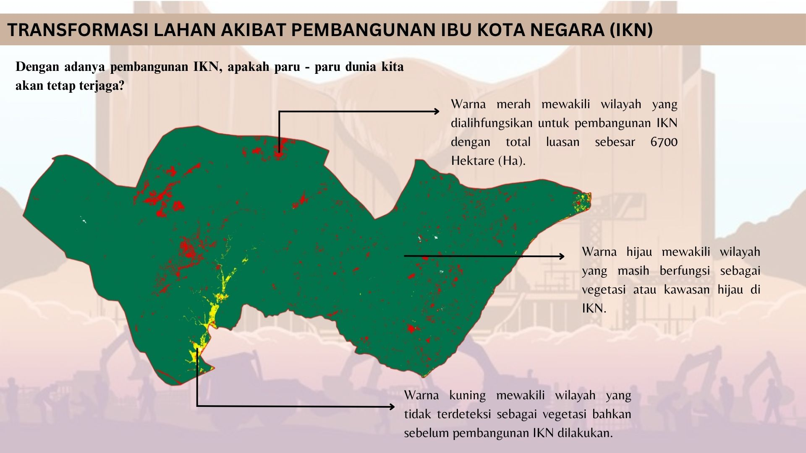

Transformasi Lahan Akibat Pembangunan Ibu Kota Negara
Pembangunan IKN berkonsep hijau tetapi berisiko lingkungan.

Pemindahan Ibu Kota Negara (IKN) hingga saat ini masih santer menjadi pembahasan di kalangan masyarakat. Bagaimana tidak? Pemindahan ini menuai banyak kontra dari berbagai pihak. Proyek pembangunan dari IKN telah dilaksanakan dari tahun 2022. Dinyatakan dalam Undang-undang No 3 Tahun 2022 bahwa IKN akan menjadi sebuah kota dalam hutan (forest city) dengan rencana minimal 75% dari wilayahnya akan tetap menjadi kawasan hijau. Hal tersebut bertujuan untuk menciptakan lingkungan perkotaan yang berkelanjutan dan ramah lingkungan.
Pembangunan IKN dirancang untuk menjaga keseimbangan antara kebutuhan pembangunan modern dan kelestarian ekosistem hutan Kalimantan. Meski demikian, perkembangan proyek ini juga memunculkan kekhawatiran mengenai dampak terhadap lingkungan dan konversi lahan secara besar-besaran. Sebagai pusat pemerintahan baru, IKN diprediksi akan memicu urbanisasi di wilayah sekitarnya. Alih fungsi lahan menjadi area terbangun semakin tak terelakkan, mengingat infrastruktur perkotaan yang berkembang pesat. Peta di atas menunjukkan perubahan lahan vegetasi yang terjadi di dua kecamatan yang digadang-gadang akan menjadi lokasi dari IKN. Selama dua tahun terakhir terjadi perubahan seluas 6700 Hektare (Ha).
| Indikator | 2022 | 2024 |
|---|---|---|
| Luas Vegetasi (Ha) | 181.800 | 175.100 |
Walaupun sejauh ini perubahan yang terjadi belum sangat besar tetapi perubahan ini tetap membawa konsekuensi terhadap hutan Kalimantan, yang menjadi salah satu paru-paru dunia. Banyak pihak mengingatkan pentingnya mitigasi dini untuk mencegah perubahan lahan yang meluas tanpa kontrol. Dengan target 75% dari wilayah IKN sebagai kawasan hijau, pemerintah menegaskan komitmen menjaga ekosistem sekaligus mewujudkan konsep kota hutan. Harapannya, dengan pengelolaan dan perencanaan yang matang, IKN dapat menjadi contoh pusat perkotaan yang tidak hanya modern tetapi juga selaras dengan alam, yang membawa manfaat jangka panjang bagi lingkungan dan masyarakat sekitar.